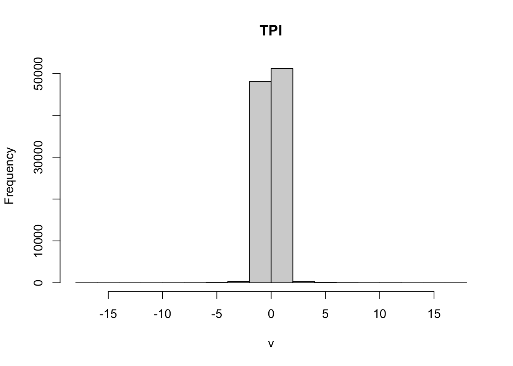

My Final Project
Topography in Montane Forest of Bighorn National Forest
Alex Gould
Introduction
Environmental models often use climate as the proxy for understanding the ecological distribution of species (Woodward 1987; Sisneros et al. 2011). The subsequent overuse of climate is attributed to the abundance of available data, as well as the relative ease of obtaining and modeling projections (Schneider 2001; Schut et al. 2014; Rashid et al. 2015; Hjältén et al. 2016; Cruickshank 2016). Climate data can be an accurate predictor at coarser scales, but at finer resolutions and across varied topography, climate modeling becomes complex and is often unsuitable as it is riddled with numerous inaccuracies (Daly 2006). Changes in vegetation patterns in relation to elevation have been recognized for some time, but the processes and systems of topography’s influence on the spatial distribution of vegetation is not well understood (Enoki 2003; Homeier et al. 2010; Moeslund et al. 2013; Wang, Zhang, and Duan 2015). While the topic of topography and spatial distribution of vegetation is expanding, the literature addressing the topographic influence on the composition, occurrence, abundance, assemblage, partitioning, succession, distribution, and niche construction of vegetative communities at fine scales (fig. 1) have not been identified. Understanding the conditions acting upon biodiversity, especially at finer scales, is important to the creation of ecological niche models, the protection of resources and ecosystem productivity, and global resilience to climate change. This project aims to answer what effect microtopography via Topographic Position Index (TPI) has on forest structure and composition in montane forests. I hypothesize that: H1a: Montane tree diversity, assemblage, and LAI will be greater in areas with a negative or flat slope angle and lower altitude H1b: LAI will decrease as a function of increasing TPI (elevation and slope angle) H1c: Forest structure limited by montane topography, will inhibit diverse and complex composition and assemblage
Materials and methods
Site Description
The location chosen for this project is Bighorn National Forest in Wyoming, United States. Bighorn National Forest is approximately 128 meters long and 48 meters wide, encompassing over 404685 hectares of land (USDA Forest Service 2021). The elevation of Bighorn National Forest ranges from 1524 meters, to its highest elevation of 4013 meters at Cloud Peak (USDA Forest Service 2021). Approximately 66% of the land cover within Bighorn National Forest is forested and made up on Douglas-fir, ponderosa pine, lodgepole pine, and spruce (Witt 2008). The sites chosen for this study are located within the National Elevation Dataset N35 W108, as shown with the black outline in Figure 1, which is approximately 4828 square kilometers.

Figure 1, N35 W108 study area of Bighorn National Forest.
Site Selection
Within Bighorn National Forest, 73 plots at 10x10 meters were used for this study (Fig. 2. The sites chosen were decided by their suitability derived primarily by their elevation as to ensure that they were in the montane biogeographic zone (between 1700 and 3000 meters). [Elevations lower than 1700 meters, and greater than 3000 meters were derived from a 1/3 arc-second digital elevation model (DEM) were contained in polygons and excluded from site selection consideration. The secondary consideration for site selection was given to the accessibility of the site. The majority of the sites chosen were on average 100 meters from a secondary road (dirt or gravel and not maintained), with few sites being greater than 100 meters from a primary road (paved and maintained). Topographic and geographic features were also included in the analysis of site accessibility, with steep inclines or declines, cliffs, major water body crossings and unstable or hazardous features generally excluded from consideration. Sites that had obvious signs of logging activity or forest fires were also excluded from consideration. The last criteria for potential sites were that they be analogous to their surrounding area, and contained at least one mature tree species (Diameter Breast Height (DBH) must be 10 centimeters or greater). After the previous criteria were met, final site selection was derived stochastically by walking a number of paces in one direction determined by a random number generator. The location produced from the previous step was used as the Northwest coordinate of the plot.

Figure 2, Plots in Bighorn National Forest
Field Data:
For each site, a 10m x 10m plot was demarcated. The plots were aligned north-south, east-west, with markers placed at the northwest, northeast, southeast and southwest corners. The preliminary elevation and photos of the plot were taken at the northwest corner (Fig. 3). At each corner, as well as at the center of each plot, a CI-110 Plant Canopy Imager recorded the coordinates, as and a wide-angle image of the plot canopy. Additionally, the Plant Canopy Imager generated canopy data for the plot including the Gap Fraction, Photosynthetically Active Radiation (PAR) Leaf Area Index (LAI), PAR Average, Sunflecks, Canopy Density, and Leaf Angle. Geographic and topographic data about each plot was noted as well as the presence or absence of rocks, boulders, downed woody debris (DWD) or standing dead trees (snags), water and ground junipers. The vegetative species composition of the plot was identified and for trees with a DBH of 10cm or greater, DBH, richness and occurrence was documented.

Figure 3, Plot Photos
Data Compilation
Using the data collected in the field, a series of data tables were constructed. The first data table contained the information collected from the plots using the Plant Canopy Imager, the second contained the geographic and topographic data related to the plot, and the third involved the data collected from tree species present in each plot. Once the tables were compiled, they were converted to comma separated value (CSV) files and loaded into RStudio for analysis. The DEM data for this study is derived from the USGS National Elevation Dataset as N35 W108. The DEM is referenced as Geographic Coordinate System North American Datum (NAD) 1983 at ⅓ arc-seconds. The United States Geological Survey (USGS) has a database of land use- land cover types for each state within the country, and the data for Wyoming will be used for this study. The database for the initial site location contains 113 distinct land use classifications.
Data Analysis:
Required packages:
library(tidyverse)
library(leaflet)
library(ggplot2)
library(tidyr)
library(sp)
library(sf)
library(vegan)
library(dplyr)
library(raster)
library(spData)
library(stats)
library(evaluate)
library(spatialEco)
library(knitr)
library(insol)
library(tmap)
#knitr::opts_chunk$set(cache=TRUE) Read in Field Data
CanopyData <- read.csv("data/CanopyData.csv")
PlotData <- read.csv("data/PlotData.csv")
TreeData <- read.csv("data/TreeData.csv")Bighorn National Forest Shape File
nf <- read_sf("data/S_USA.AdministrativeForest/S_USA.AdministrativeForest.shp")
bighorn <- dplyr::filter(nf,FORESTNAME=="Bighorn National Forest") Load in Wyoming Landuse Landcover Data
lulu <- read_sf("data/S_USA.AdministrativeForest/S_USA.AdministrativeForest.shp")
#plot(lulu)Load DEM Data
if(!file.exists("data/DEM1.tif"))
download.file("https://figshare.com/ndownloader/files/31430317", "data/DEM1.tif")
DEM<- raster("data/DEM1.tif") %>%
crop(bighorn) %>%
mask(bighorn)
#DEM2 <- raster("data/DEM2.tif")
#DEM_combined <- merge(DEM1, DEM2)
#read it in and then merge them into a single one called "DEM" Rename, Summarize, and Group Data
canopy <- CanopyData %>%
group_by(Plot_Number) %>%
dplyr::select(-Sunflecks) %>%
summarise_if(is.numeric, list(mean = function(x) mean(x, na.rm = TRUE),
sd = function(x) sd(x, na.rm = TRUE)))
plots <- PlotData %>%
group_by(Plot_Number) %>%
summarize(lat=mean(Lat), lon=mean(Lon)) #%>%
# st_as_sf(.,coords=c('lon','lat')) %>%
# st_set_crs(.,value=4326) %>%
# st_transform(.,crs=st_crs(DEM))
trees<- TreeData%>%
group_by(Plot_Number) %>%
summarize(Tree_ID, Species_Scientific_Name, DBH)## `summarise()` has grouped output by 'Plot_Number'. You can override using the `.groups` argument.Table of Species by Plot
# create a table of species by plot
tree1<-trees %>%
dplyr::select(-Tree_ID,-DBH) %>%
group_by(Plot_Number,Species_Scientific_Name) %>%
summarise(count=n()) %>%
spread(Species_Scientific_Name,count) %>%
mutate_all(function(x) ifelse(is.na(x),0,x))## `summarise()` has grouped output by 'Plot_Number'. You can override using the `.groups` argument.## `mutate_all()` ignored the following grouping variables:
## Column `Plot_Number`
## Use `mutate_at(df, vars(-group_cols()), myoperation)` to silence the message.counts <-table(trees$Species_Scientific_Name)
barplot(counts, main= "Species Occurence Throughout Plots", horiz=TRUE, xlab="Species", ylab= "Occurence", col = c("#DD8317", "#3A9B44", "#47ACC2", "#EACF4F", "#EA5F4f", "#DD1794","#FFC300"), names.arg=c("Juniperus occidentalis", "Picea engelmannii","Pinus contorta", "Pinus ponderosa", "Pinus flexilis", "Populus tremuloides", "Pseudotsuga menziesii"), cex.names=0.2, legend=TRUE)Calculate the Diversity
#calculate the diversity
diversity=data.frame(Plot_Number=tree1$Plot_Number,div=diversity(tree1))
#plot it
ggplot(data= diversity, mapping=aes(x=Plot_Number, y=div))+
geom_bar(stat = "identity")+
labs(x = "Plot Number", y = "Diversity", title ="Species Diversity Across Plots")Create a Merged Dataset
#Merge Datasets (originally had diversity in the bottom, changed to get speceis name)
Merged <- merge(canopy, plots) %>%
merge(diversity) %>%
st_as_sf(coords = c(x="lon", y="lat")) %>%
st_set_crs(.,value=4326) %>%
st_transform(.,crs=st_crs(DEM))
#plot merged to look at plots for diversity
ggplot(data=Merged, mapping=aes(x=plots$lon, y=plots$lat, color =Merged$div))+
geom_point()## Warning: Use of `Merged$div` is discouraged. Use `div` instead.Calculate TPI, Slope angle, Slope aspect and Elevation
#Calculating TPI, elevation, angle and aspect
#extract(DEM,)
tpiw <- function(x, w=5) {
m <- matrix(1/(w^2-1), nc=w, nr=w)
m[ceiling(0.5 * length(m))] <- 0
f <- focal(x, m)
x - f}
tpi100 <- tpiw(DEM, w=11)
TPI <- terrain(DEM, opt="TPI",)
slope <- terrain(DEM,opt="slope", units ="degrees")
aspect <- terrain(DEM,opt="aspect")
topo <- stack(DEM, slope, aspect, TPI)
hist(TPI)## Warning in .hist1(x, maxpixels = maxpixels, main = main, plot = plot, ...): 0%
## of the raster cells were used. 100000 values used.
plot(topo)#look at how others have calculates trees in FIA plots Extract Points
#Extracting
envi <- raster::extract(topo, Merged)
bind <- bind_cols(Merged,as.data.frame(envi))
plot(bind)## Warning: plotting the first 10 out of 16 attributes; use max.plot = 16 to plot
## allGraphs
tree_coords <- merge(trees, plots)
ggplot(data=tree_coords, mapping=aes(x=lon, y=lat, color=Species_Scientific_Name,size=DBH))+
geom_point() +
facet_wrap(~Species_Scientific_Name)#overlay on elevation or just a basemap with the ggmap package
tmap::tmap_mode(mode='view')## tmap mode set to interactive viewingtm_shape(bind)+
tm_dots(col='black')#data %>%
# slice(1:10) %>% #show only 1:n rows
# kable(digits=2,align="c")%>% #make table and round to two digits
#kable_styling(bootstrap_options =
# c("striped", "hover", "condensed", "responsive")) #apply other formattingAdd any additional processing steps here.
Results
[~200 words]
Tables and figures (maps and other graphics) are carefully planned to convey the results of your analysis. Intense exploration and evidence of many trials and failures. The author looked at the data in many different ways before coming to the final presentation of the data.
Show tables, plots, etc. and describe them.
#m <- leaflet(data) %>%
# addTiles() %>%
# addCircleMarkers(~x, ~y, radius = ~size,color = ~as.factor(category)) %>%
# addPopups(~x[2], ~y[2], "Random popup")
# a map with the default OSM tile layer#data %>%
# ggplot(aes(x=x,y=y,col=category))+
# geom_point()Conclusions
[~200 words]
Clear summary adequately describing the results and putting them in context. Discussion of further questions and ways to continue investigation.
References
All sources are cited in a consistent manner